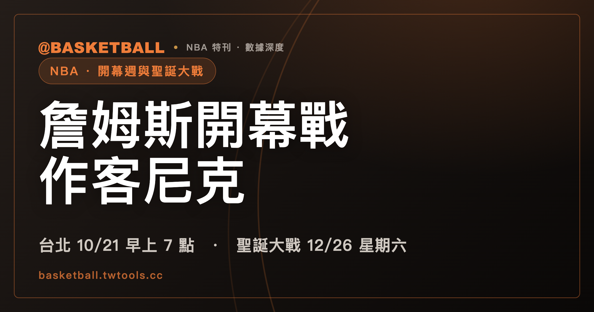

詹姆斯開幕戰作客尼克，台北時間 10 月 21 日早上 7 點
NBA 在 2026 年 8 月 11 日公布 2026-27 球季的開幕週與聖誕大戰，共 14 場。詹姆斯（LeBron James）隨費城 76 人在開幕夜作客紐約尼克，台北時間是 10 月 21 日星期三早上 7 點；聖誕大戰 5 場在台灣則全部落在 12 月 26 日星期六。這 14 場不能用同一個時差換算：10 月的場次美東仍是 EDT，12 月已經回到 EST，兩批比賽正好差一小時。

NBA · 2026-27 賽程｜開幕週 9 場 · 聖誕大戰 5 場 · 台北時間全對照
同一份 NBA 賽程，不能從頭到尾套用同一個時差。
2026 年 10 月的場次，美東使用 EDT，台北領先 12 小時。到了 12 月，美東已經回到 EST，台北領先 13 小時。開幕週與聖誕大戰只隔兩個月，換算規則卻差了一小時。
這不是小地方。只要沿用 10 月的算法處理聖誕大戰，行事曆就會整批錯一小時。
NBA 在 2026 年 8 月 11 日公布 2026-27 球季的部分賽程。範圍只有開幕週與聖誕大戰，共 14 場。消息分別透過 NBC《TODAY》、ABC《Good Morning America》與 CBS《CBS Mornings》公布。
下面兩張表的轉播欄位，列的是美國的轉播單位：NBC、Peacock、ESPN、ABC 與 Prime Video。
尼克在開幕夜升起冠軍旗
開幕日是美東時間 2026 年 10 月 20 日，星期二。當天排了三場連續賽事，全部由 NBC 與 Peacock 播出。換成台北時間，三場都落在 10 月 21 日星期三，開賽時間依序是 03:00、07:00、09:30。
中間一場是費城 76 人作客紐約尼克。地點在 Madison Square Garden，台北時間 07:00 開賽。
尼克是 2025-26 球季 NBA 總冠軍，總冠軍賽以 4:1 擊敗聖安東尼奧馬刺，拿下隊史第 3 冠，結束自 1973 年以來長達 53 年的等待（奪冠過程另有完整回顧）。開幕夜當天，尼克會在主場升起 1973 年以來的第一面冠軍旗。
NBC 的賽前節目從美東時間 18:30 開始，內容包含升旗，比賽 19:00 開賽。NBC Sports 等媒體把當晚稱為「ring night（戒指之夜）」，NBC Sports 自家的報導還寫出戒指會由 NBA 總裁蕭華（Adam Silver）在賽前頒發，儀式也含在轉播裡。不過截至 8 月 12 日，NBA 與尼克的正式公告都只寫升旗，沒有出現戒指。
作客的一方也換了樣子。詹姆斯（LeBron James）與布朗（Jaylen Brown）在休賽季加入 76 人，搭配恩比德（Joel Embiid）、馬克西（Tyrese Maxey）與 VJ Edgecombe。
詹姆斯加盟 76 人已經由聯盟官方確認。這筆簽約在 7 月底還停在報導層，當時的判準與他的生涯數據，寫在詹姆斯加盟 76 人那篇；其餘休賽季異動另有專文整理。
開幕週有 7 場落在台灣的上班上課日
開幕週共有 9 場。換成台北時間後，分布在 10 月 21 日星期三、22 日星期四、23 日星期五與 24 日星期六，開賽時間從 03:00 到 10:00。
落在星期六的只有 10 月 24 日那兩場，其餘 7 場都在上班上課日。這 7 場裡最早的一場在凌晨 03:00，其他 6 場集中在早上 07:00 到 10:00 之間，正好卡在通勤和上班的時段。
日期與星期幾也不能照美東賽程直接讀：美國的星期二開幕日，在台北已經是星期三。
表 A：開幕週，共 9 場（美東 10/20–10/23）
| 台北時間 | 美東時間 | 對戰（客隊 → 主隊） | 場館 | 美國轉播 |
|---|---|---|---|---|
| 10/21（三）03:00 | 10/20（二）15:00 EDT | 波士頓塞爾提克 → 底特律活塞 | Little Caesars Arena，Detroit | NBC／Peacock |
| 10/21（三）07:00 | 10/20（二）19:00 EDT | 費城 76 人 → 紐約尼克 | Madison Square Garden，New York | NBC／Peacock |
| 10/21（三）09:30 | 10/20（二）21:30 EDT | 奧克拉荷馬雷霆 → 聖安東尼奧馬刺 | Frost Bank Center，San Antonio | NBC／Peacock |
| 10/22（四）07:30 | 10/21（三）19:30 EDT | 明尼蘇達灰狼 → 邁阿密熱火 | Kaseya Center，Miami | ESPN |
| 10/22（四）10:00 | 10/21（三）22:00 EDT | 金州勇士 → 洛杉磯湖人 | Crypto.com Arena，Los Angeles | ESPN |
| 10/23（五）07:00 | 10/22（四）19:00 EDT | 克里夫蘭騎士 → 費城 76 人 | Xfinity Mobile Arena，Philadelphia | ESPN |
| 10/23（五）09:30 | 10/22（四）21:30 EDT | 丹佛金塊 → 奧克拉荷馬雷霆 | Paycom Center，Oklahoma City | ESPN |
| 10/24（六）07:00 | 10/23（五）19:00 EDT | 紐約尼克 → 波士頓塞爾提克 | TD Garden，Boston | Prime Video |
| 10/24（六）09:30 | 10/23（五）21:30 EDT | 休士頓火箭 → 聖安東尼奧馬刺 | Moody Center，Austin | Prime Video |
表中還有兩個容易看錯的場地資訊。
10 月 22 日美東時間，克里夫蘭騎士作客費城 76 人，場館名稱是 Xfinity Mobile Arena。這個名稱自 2025 年 9 月 1 日生效，原名是 Wells Fargo Center，冠名延續至 2030-31 球季。它不是 2026 年才改名。
10 月 23 日美東時間，休士頓火箭作客聖安東尼奧馬刺，比賽卻不在聖安東尼奧，而是在德州奧斯汀的 Moody Center。賽程資料上馬刺仍然掛主隊，等於把一場主場比賽搬到了另一座城市。
至於這場算不算中立場地，NBA.com 自己給了兩種說法：文字稿把比賽描述為「neutral site（中立場地）」，賽程資料欄位卻標成非中立場地，ESPN 的賽程資料同樣標非中立。兩種標示都沒有附說明。
聖誕大戰在台北全部落在星期六
聖誕大戰共有 5 場。美東日期全是 12 月 25 日星期五，換成台北時間後，5 場全都落在 12 月 26 日星期六，從 01:00 一路排到 11:30。美國轉播單位全部是 ABC 與 ESPN。
第一場是聖安東尼奧馬刺作客紐約尼克，也是 2026 年總冠軍賽的重演。接著是邁阿密熱火作客波士頓塞爾提克。
第三場由費城 76 人作客洛杉磯湖人，台北時間 06:00 開賽。詹姆斯會以 76 人球員身分作客湖人，而湖人正是他的上一支球隊。
後兩場依序是奧克拉荷馬雷霆作客明尼蘇達灰狼，以及丹佛金塊作客金州勇士。
表 B：聖誕大戰，共 5 場（美東 12/25，全部 ABC＋ESPN）
| 台北時間 | 美東時間 | 對戰（客隊 → 主隊） | 場館 | 美國轉播 |
|---|---|---|---|---|
| 12/26（六）01:00 | 12/25（五）12:00 EST | 聖安東尼奧馬刺 → 紐約尼克 | Madison Square Garden，New York | ABC／ESPN |
| 12/26（六）03:30 | 12/25（五）14:30 EST | 邁阿密熱火 → 波士頓塞爾提克 | TD Garden，Boston | ABC／ESPN |
| 12/26（六）06:00 | 12/25（五）17:00 EST | 費城 76 人 → 洛杉磯湖人 | Crypto.com Arena，Los Angeles | ABC／ESPN |
| 12/26（六）09:00 | 12/25（五）20:00 EST | 奧克拉荷馬雷霆 → 明尼蘇達灰狼 | Target Center，Minneapolis | ABC／ESPN |
| 12/26（六）11:30 | 12/25（五）22:30 EST | 丹佛金塊 → 金州勇士 | Chase Center，San Francisco | ABC／ESPN |
美國日光節約時間在 11 月 1 日結束
兩套時差的分界，來自美國日光節約時間。
依照美國國家標準暨技術研究院（National Institute of Standards and Technology，NIST）的規則，2026 年日光節約時間自 3 月 8 日凌晨 2 時開始，到 11 月 1 日凌晨 2 時結束。
開幕週在 10 月，仍落在日光節約時間內，美東使用 EDT，所以台北時間是在美東開賽時間上加 12 小時。聖誕大戰在 12 月，美東已使用 EST，台北時間要加 13 小時。
判讀順序可以很短：先看賽程時間後面寫 EDT 還是 EST。EDT 對台北加 12 小時，EST 對台北加 13 小時。之後 NBA 陸續放出其他場次時，同一套判讀也適用。
NBA 目前公布的是部分賽程
8 月 11 日這一批只有開幕週與聖誕大戰，共 14 場，不是 2026-27 球季的全聯盟完整賽程。
在這之前，NBA 已經公布過另外幾場例行賽的日期與對戰：11 月 7 日的墨西哥城賽事，由丹佛金塊對印第安納溜馬；2027 年 1 月 14 日的巴黎賽事與 1 月 17 日的曼徹斯特賽事，都由聖安東尼奧馬刺對紐奧良鵜鶘。已經有日期的 2026-27 例行賽，不只上面 14 場。
至於全聯盟完整賽程哪一天公布，截至 8 月 12 日，NBA 官方沒有說明。兩家全國轉播夥伴倒是給了同一個時間點：ESPN 與 NBC Sports 的官方新聞稿都表示，自家的完整例行賽轉播賽程會在 8 月 13 日星期四公布。那是各自的轉播安排，和全聯盟完整賽程的公布日不是同一件事。
常見問題
NBA 2026-27 球季開幕日是哪一天？
開幕日是美東時間 2026 年 10 月 20 日星期二，共有三場連續賽事。換成台北時間，三場都在 10 月 21 日星期三，分別於 03:00、07:00、09:30 開賽。
開幕週與聖誕大戰為什麼要用不同時差？
2026 年美國日光節約時間在 11 月 1 日凌晨 2 時結束。10 月場次使用 EDT，台北領先 12 小時；12 月場次使用 EST，台北領先 13 小時。
2026 年 NBA 聖誕大戰在台北是哪一天？
5 場比賽在美東都是 12 月 25 日星期五，換成台北時間後，全都在 12 月 26 日星期六，開賽時間從 01:00 到 11:30。
NBA 已經公布 2026-27 球季完整賽程了嗎？
還沒有。8 月 11 日公布的是開幕週與聖誕大戰，共 14 場；在這之前，墨西哥城、巴黎與曼徹斯特三場例行賽也已經有日期。全聯盟完整賽程的公布日期，截至 8 月 12 日 NBA 官方沒有說明。ESPN 與 NBC Sports 都表示 8 月 13 日公布自家的完整例行賽轉播賽程，那是轉播安排，不是全聯盟賽程。
主要資料來源
- NBA 官方賽程公布頁：
https://www.nba.com/news/2026-27-schedule-announced（2026-08-11） - NBA 官方 2026-27 重要日程頁：
https://www.nba.com/news/key-dates - NBC Sports 官方新聞稿（開幕日三連戰、升旗與賽前節目時間、NBC 自家完整賽程 8 月 13 日公布），2026-08-11：
https://www.nbcsports.com/pressbox/press-releases/jalen-brunson-and-defending-nba-champion-new-york-knicks-lebron-james-victor-wembanyama-shai-gilgeous-alexander-jayson-tatum-and-cade-cunningham-headline-first-ever-american-express-nba-tip-off-tripleheader-on-tuesday-oct-20-on-nbc-and-peacock - NBC Sports 報導（ring night 稱呼、戒指由蕭華頒發並含在轉播裡），2026-08-11：
https://www.nbcsports.com/nba/news/nba-tips-off-season-on-nbc-with-triple-header-featuring-lebron-philadelphia-at-new-york-on-ring-night - ESPN Press Room 官方新聞稿（開幕週 ESPN 場次、聖誕大戰轉播、ESPN 自家完整賽程 8 月 13 日公布），2026-08-11：
https://espnpressroom.com/press-release/espn-and-abc-unveil-american-express-nba-tip-off-and-christmas-day-broadcast-schedules-for-the-2026-27-regular-season/ - NBA 官方國際賽公告（巴黎、曼徹斯特），2026-03-26：
https://www.nba.com/news/spurs-pelicans-nba-paris-nba-manchester-2027 - NIST 日光節約時間規則頁：
https://www.nist.gov/pml/time-and-frequency-division/popular-links/daylight-saving-time-dst - 台北時間為依美東公告時間換算，換算基準即 NIST 這條日光節約時間規則。